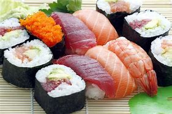
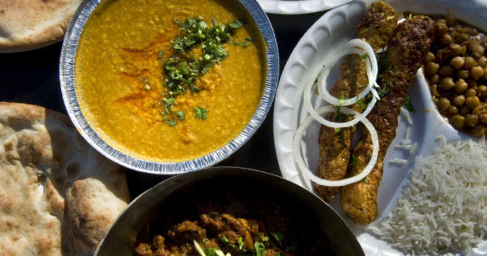

Foods
East Asia
For cuisine there is a lot of diverse food from Sichuan's spices to Cantonese Dim Sum or Korean Kimchi or bulgogi
or Japanese cuisine like sushi and tempura.

South Asia
South Asia has many dishes from Fiery Curries to Delicate biryanis
Each reigion has its speciality like Biryani from Hyederabad, Masala from South India and Tandoori Chicken from the north
There is also lots of sweets like kheer, gulab jamun and jalebi

Middle East
Common Ingredients in middle eastern cuisine are, Olives, Pitas, Chickpeas, Dates, Honey and Rice
Some popular dishes are Kebabs, Dolmas, Falafel, Baklava and Shawarma
Middle Eastern food is all about hospitality and sharing.